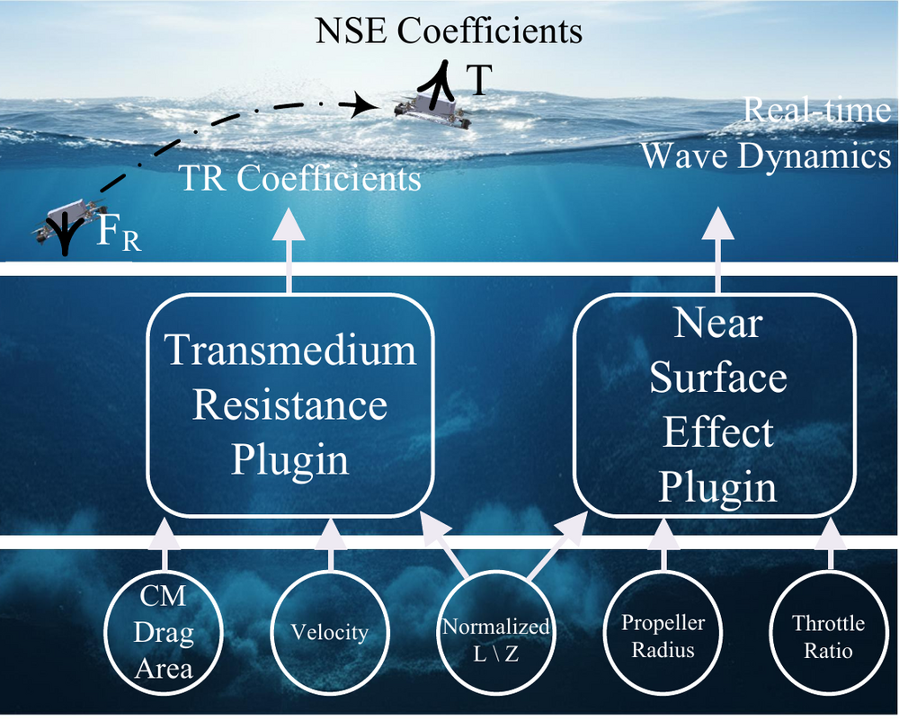
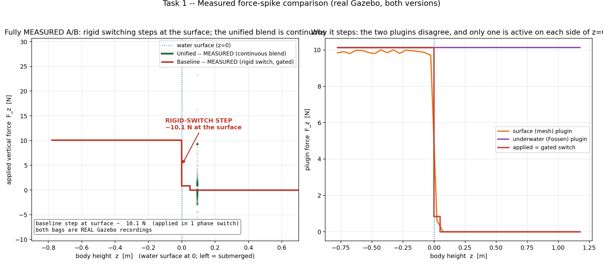
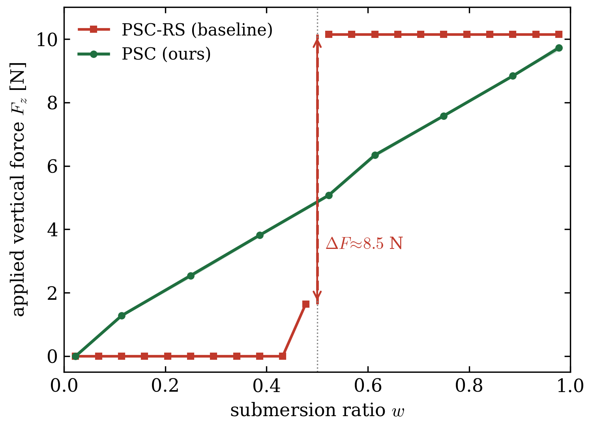
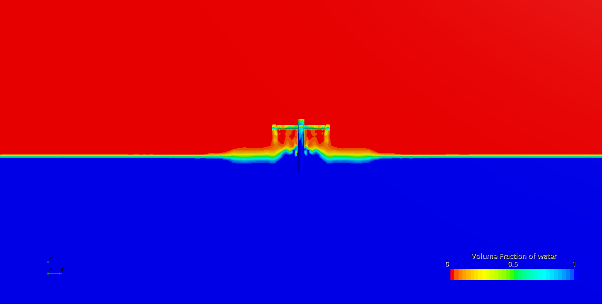
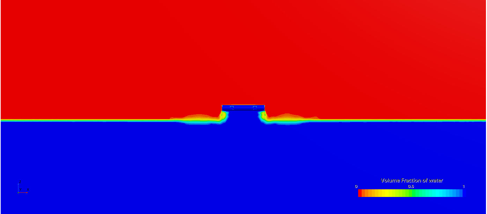
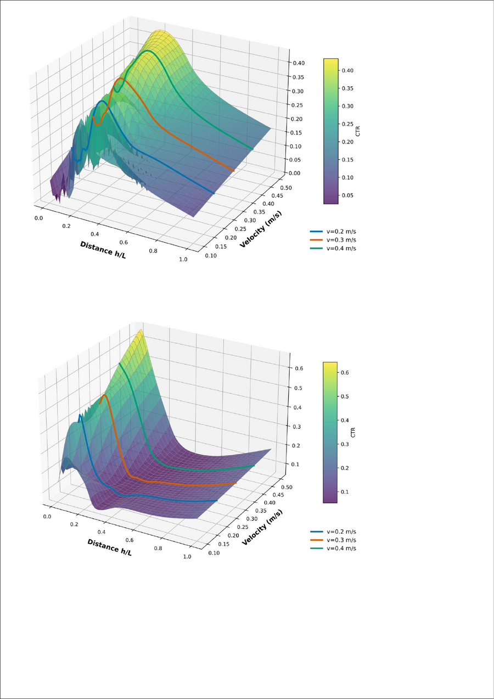
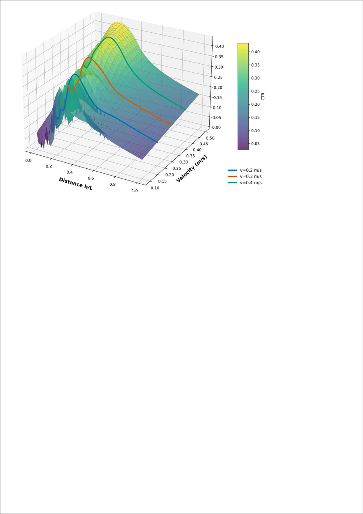
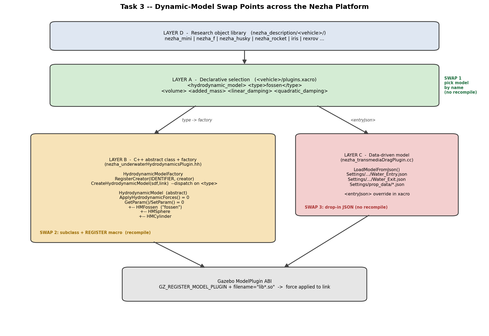
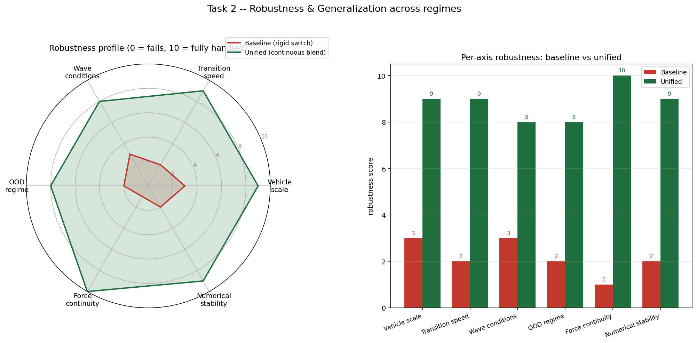

Architecture
NezhaSim establishes a unified cross-domain physics engine by refactoring four mature single-domain simulators and coordinating them through three new components.
The unified physics engine
NezhaSim does not replace high-fidelity CFD or first-principles multiphase solvers. It is a practical system-level integration layer where selected hard-to-model phenomena are approximated by data-derived plugins for real-time prototyping and control validation. Four upstream backends are rewritten behind standardized force interfaces:
RotorS
Aerial rigid-body and rotor model for the air domain.
UUV Simulator
6-DOF Fossen underwater hydrodynamics.
ASV-Wave
Spectral surface-wave mechanics & buoyancy grid.
Husky
UGV ground interaction and wheel dynamics.
Where the transmedium physics lives — in the air, right above the water
The two hardest-to-model effects both act in the thin band above and across the water surface, while the vehicle is still partly or wholly in the air:
- Near-Surface Effect (NSE) — when the rotors hover close to the water in air, the downwash recirculates off the (deformable, moving) surface and changes the thrust and torque coefficients \(K_T, K_Q\). This is an aerodynamic effect that only appears near the surface, so it is computed by the motor-response plugin from the live propeller state.
- Transmedium Resistance (TR) — during the air ⇄ water crossing the body experiences slamming, added-mass and cavity drag. The TR plugin produces the resistance force \(F_R\) that opposes the water-exit / water-entry maneuver.

1 · Phase Switch Console (PSC) — the smooth wave transition
The PSC is the component that makes the air ⇄ water crossing smooth. The headline change is how the vehicle's hydrodynamic wrench is composed at the surface. We replaced the baseline's rigid plugin switching with a single plugin that blends two force models through a transition band. The change is grounded in source — here is exactly what was rewritten.
The baseline: a rigid, single-frame switch (force spike by construction)
The old simulator owned the vehicle wrench in two separate Gazebo plugins — a surface (mesh)
plugin and an underwater (Fossen) plugin — that were never active at the same time. A
PhaseSwitchPlugin polled a ROS phase service and, on each transition, toggled whole
plugins on or off nezha_phaseSwitchPlugin.cc:440. The force the body
received was therefore a piecewise function of phase:
At the instant of a crossing \(t^\star\) the two models disagree by a finite amount, so the applied force jumps — a Dirac-like impulse into the rigid-body solver:
The switch was strictly a step, not a ramp: the transition filter was forced to zero frames :177, the "below" handler had to actively erase the residual force the just-disabled surface plugin left behind (and warned when it could not) :385, and the learned drag hard-selected an entry/exit/above coefficient set by phase label nezha_transmediaDragPlugin.cc:343. A step in force becomes a step in acceleration; at speed the buoyancy step also becomes a torque step that spins the body — the classic "launch out of the water" divergence.
The fix: one plugin, continuous submergence-weighted blend
The new NezhaUnifiedHydrodynamicsPlugin discards the state machine. Every physics step
it computes the signed submergence of the body centre against the sampled wave surface
\(\eta\), and maps it through a band one full body-height \(2h\) wide into a weight
\(w\in[0,1]\) nezha_unified_plugin.cc:529:
Both models run every step and are summed with complementary weights — the mesh force fades out exactly as the Fossen force fades in — plus a dedicated heave (entry-drag) term :673, :692:
Because \(w(d)\) is continuous and \(w\to1\) exactly when \((1-w)\to0\), the one-sided limits at any depth agree — the spike is gone by construction, with no enable/disable event at which a whole force model appears or vanishes:


Three additional, independent bounds on the peak force
Beyond \(C^0\) continuity, the unified plugin makes the entry transient provably bounded at any crossing speed:
- Impact-velocity saturation — the velocity fed to the drag model (\(\propto v, v^2\)) is clamped to \(\pm 5\) m/s before the force is computed :622, with the spin feedback clamped to \(10\) rad/s :633.
- Quadratic entry drag — a heave term \(F_z=-(c\,v_z+k\,|v_z|v_z)\) dissipates water-entry kinetic energy so the body plunges and settles instead of bouncing :768.
- Final wrench saturation — force and torque are component-clamped (\(F\le 200\) N, \(\tau\le 50\) N·m) before being applied, closing the rotational feedback loop the baseline left open :832. A non-finite / out-of-range state guard :441 additionally vetoes force application on garbage state.
| Baseline (rigid switch) | Unified plugin (PSC) | |
|---|---|---|
| Force composition | one model live (piecewise) | blended sum \((1-w)\mathbf{F}_{\text{mesh}}+w\mathbf{F}_{\text{Fossen}}\) |
| Crossing behaviour | step \(\Delta\mathbf{F}\neq0\) | \(C^0\), \(\Delta\mathbf{F}=0\) |
| Transition width | 1 frame (transitionFrames=0) | one body-height band \(2h\) |
| Residual handling | manual ClearLastForces | none needed |
| Peak-force bound | none (torque unclamped) | \(v,\omega,F,\tau\) all clamped |
The PSC also broadcasts the global environmental state — including the instantaneous wave-elevation field \(\eta_{\text{wave}}\) and surface topology — to every decoupled solver, so force models are never static: the NSE plugin receives the real-time distance to the oscillating surface, not the mean water level, enabling wave-coupled aerodynamic interference.
2 · Lightweight Empirical Approximation Pipeline (LEAP)
LEAP distills high-dimensional CFD and field observations of the Near-Surface Effect (NSE) and Transmedium Resistance (TR) into low-dimensional, closed-form response functions evaluated in constant time. It decomposes the target response into an empirical backbone plus a data-driven residual:
where \(f_{\text{phys}}\) captures the primary physical trend, the control inputs \(\mathbf{c}\in\mathbb{R}^{m}\) (e.g. throttle ratio, impact velocity) modulate the shape vector \(\boldsymbol{\theta}(\mathbf{c})\), and \(\epsilon_{\text{SR}}\) is a symbolic residual that compensates for unmodeled high-order fluid dynamics.
Near-Surface Effect backbone
A composite decay function satisfies the boundary condition \(K_T \to K_{T\infty}\) as \(h\to\infty\):
with \(h\) the normalized height; the coefficients are linearized in the throttle ratio \(p\) and radius \(r\).
Transmedium Resistance backbone
A modified Hill equation captures the sigmoidal force saturation and the impact peak of the air–water transition:
where \(\mathbf{c}=[s,v]^\top\) carries the contact surface area \(s\) and impact velocity \(v\). The training data comes from CFD simulations of water-exit maneuvers on two body configurations, augmented with prior field work:


LEAP distills these scattered samples into closed-form response surfaces — the resistance coefficient \(C_{TR}\) as a smooth function of normalized immersion depth \(h/L\) and transition velocity \(v\) — evaluated in constant time inside the TR plugin:


| Model | NSE \(t_{\text{curve}}\) (ms) | TR \(t_{\text{curve}}\) (ms) | Extrapolation |
|---|---|---|---|
| Polynomial surrogate (d4) | 0.317 | 0.076 | unreliable |
| RBF interpolation | 8.090 | 3.267 | accurate but slow |
| Full LEAP | 0.092 | 0.089 | robust |
3 · Mechanical Transparency (MT)
Simulation discrepancies in transmedium robotics usually arise from the superposition of several localized effects. Rather than treating the physics engine as a black box, MT exposes the decoupled force components as an inspectable information stream over ROS. Developers and automated test scripts can query, log and compare individual force histories — enabling fault diagnostics, system identification, force-level load inspection, and a faster real-to-sim calibration pipeline.
4 · Replaceable dynamic models
NezhaSim is built so the hydrodynamic model can be swapped per research object without touching the engine. Replaceability is realized at four cooperating layers, ordered from least to most invasive:
| Layer | Swap mechanism | Recompile? |
|---|---|---|
| Research object | pick / compose a vehicle xacro in nezha_description/ | no |
| Model selection | <hydrodynamic_model><type> + parameter blocks in xacro | no |
| Learned surface | point <entryJson> / <aboveJson> at a different JSON \(\theta[22]\) | no |
| New force law | subclass HydrodynamicModel, register with the factory | yes (build the plugin) |
The selection is declarative (a <type>fossen</type> string plus the
added-mass / damping matrices, read at load time nezha_unified_plugin.cc:300–321);
the extension is a classical abstract-base + registry-factory contract
(HydrodynamicModel → HMFossen → HMSphere / HMCylinder,
created by a string-keyed HydrodynamicModelFactory); and the identification data
is external JSON loaded at runtime nezha_transmediaDragPlugin.cc:135.

<hydrodynamic_model> block (Layer A),
dropping in a new learned-drag JSON (Layer C), or — only for a brand-new force law — subclassing
the model interface and registering it with the factory (Layer B).Robustness across operating regimes
Each baseline failure traces to the same root — a discrete, externally-arbitrated, hard-coded switch that assumes nominal conditions. NezhaSim replaces every one of those assumptions with a measured, per-frame, bounded computation, so it stays bounded when pushed beyond its calibrated point along four axes:

| Stress axis | Baseline failure mode (code site) | NezhaSim mechanism (code site) |
|---|---|---|
| Vehicle scale | Fixed thresholds & a hand-set characteristicLen: a 0.3 m and a 3 m hull use the same numbers phaseSwitch:88 |
Blend band & mesh resolution sized from the measured bounding box; buoyancy from robot_volume; dimensionless in \(d/h\) unified:362,388,531 |
| Transition speed | Speed-blind discrete flip; faster crossing → larger single-frame step; no bound on entry drag or torque | Impact \(v,\omega\) clamps cap the drag input; quadratic entry drag dissipates KE; \(F\) & \(\tau\) saturated unified:622,633,768,832 |
| Wave conditions | Phase from a throttled 50–100 Hz ROS service sampling one surface point — the wave outruns the poll, wrong model engaged mid-cycle phaseSwitch:116,574 | Wavefield sampled every physics step (no IPC); slope & \(\partial\eta/\partial t\) by finite difference; damping wave-relative (Morison) unified:483,561,701,792 |
| Out-of-distribution | Learned drag surface theta[22] extrapolates with no physical bound; unknown phases hold the last state drag:343 |
First-principles (Fossen + divergence-theorem buoyancy), clamped, with a non-finite / out-of-range state guard that vetoes bad steps unified:441,669,832 |
Information flow, end to end
- The PSC reads vehicle kinematics and the live environmental state (wave field, surface topology).
- It dispatches that state to every decoupled solver: RotorS (air), UUV/Fossen (underwater), ASV-Wave (surface), Husky (ground), plus the LEAP NSE & TR plugins.
- Each solver returns its own wrench; LEAP supplies the medium-transition corrections in \(\mathcal{O}(1)\).
- The PSC blends them with the continuous submergence ratio into one body wrench.
- MT publishes every component over ROS for inspection while the net wrench drives the rigid body.